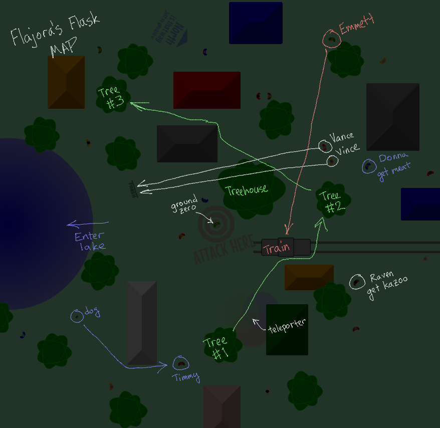

Spoiler alert, obviously.
The first item you collect, the kazoo, will let you go back in time (and save your game) by pressing Backspace.
There are a total of 10 items in the game, and you should use the kazoo every time you get an item. Generally you'll have just enough time to get one before the clock runs down. Don't even think about trying for two items in one go unless you're in easy mode.

Get this from Raven in the right side of town, just beyond an orange building, below the train tracks.
Two people named Vance and Vince are running a race just above where you start. If you don't interfere, Vance (the one on top) will win. If you stand in front of Vance and slow him down enough that Vince wins instead, Vince will give you the sneakers. This lets you run much faster.
Get this from Donna on the right side of town, above the train tracks, just below a blue house.
Walk to the lost dog on the lower-left of town. Guide her over to Timmy on the right side of the building to the right. The dog will follow you if you stay close enough and you have the raw meat. Talk to Timmy when he sees the dog and he'll give you the Bag of Air.
Emmett is running down to catch the train. If you block him until the train pulls out without him, he'll give you his train ticket.
Someone named Skwirrle is hiding under a tree (Tree #1 on the map) below the starting point. If you get near enough he'll run out to another tree (Tree #2) just above the train. Do it again and he'll run to another tree (Tree #3) in the upper-left of town, just to the right of an orange building. Here you can talk to him and he'll give you a ladder.
Walk straight into the lake. Underneath the lake, walk upward while avoiding the dark spots. If you get caught in one you can make it out by holding in one direction. Make it to the center to the glowing spot and claim the Blue Gem.
Run to the train and board it. It will immediately leave for the desert. Here you need to go upward a few screens. There will be large rockslides pushing you down. You can avoid some of them by starting out going diagonally around them and coming back.
Enter the large tree up and to the right of the starting point. You'll climb to the treehouse. Avoid the gusts that blow you back. Or, just hold up, you'll have a good chance of making it through.
Go to the teleporter below the center of town. You'll be teleported to Flajora's ship. You need to move up through the bulkheads to reach the top. The vertical-moving ones will push you on their way down, so try to anticipate when one's coming down and move aside. If you're on easy mode, you have enough time to walk around the side and avoid the whole thing.
Stand at ground zero in the center of town, where you start, until the timer reaches 5 seconds. Then press Space to talk to Flajora and watch the ending cutscene.